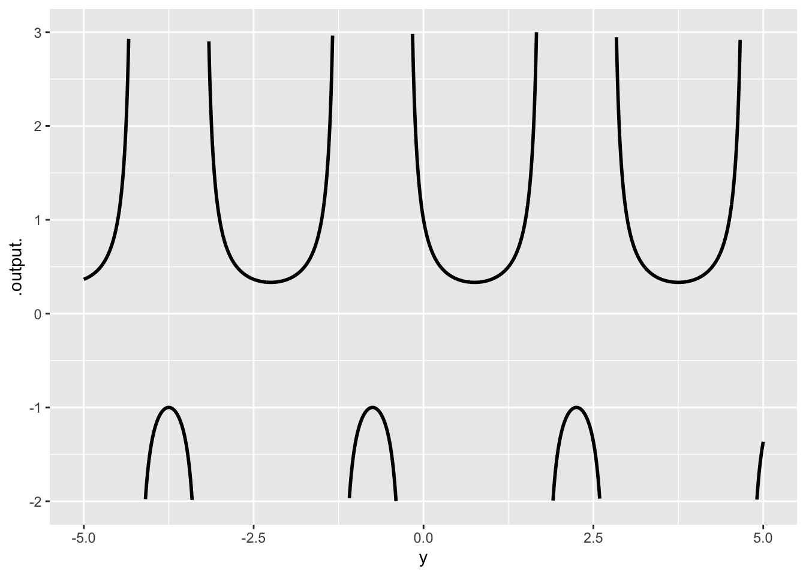

D(x^2 ~ x)function (x)
2 * xD(sin(a*x) ~ x)function (x, a)
a * cos(a * x)DTK
February 18, 2025
We start on the “differentiation” part of the course today.
Our task for today is to see how simple differentiation is and why so many generations have found it to be an “advanced” math topic.
The idea of a derivative revolutionized science and math. It’s a big deal.
Yet the underlying concept is very simple to modern eyes.
But not so simple for people living in 1600-1850. These sorts of things were not available in that era.
“Mathematicians of the 18th century typically regarded a function as being defined by an analytic expression.” Source
“An analytic expression (also known as expression in analytic form or analytic formula) is a mathematical expression constructed using well-known operations that lend themselves readily to calculation. … [T]he set of well-known functions allowed can vary according to context but always includes the basic arithmetic operations (addition, subtraction, multiplication, and division), exponentiation to a real exponent (which includes extraction of the nth root), logarithms, and trigonometric functions.” Source
The conception of a function as “being defined by an analytic expression” is perhaps what leads to the idea of differentiation as being about formulas: translating one analytic expression into another.
“In the 19th century, the demands of the rigorous development of analysis by Weierstrass and others, the reformulation of geometry in terms of analysis, and the invention of set theory by Cantor, eventually led to the much more general modern concept of a function as a single-valued mapping from one set to another.” Source
Instead of “one set to another,” think of it as a mapping from an input space to an output space. A space is a set of continuous possibilities.
We can trace the essential cognitive shift that led to the invention of differentiation by looking at where Galileo (1564 - 1642) left things off and what Newton (1643-1727) needed to change to give a modern conception of motion. - That Newton was born the year after Galileo died provides a nice symbol of the emergence of calculus.
We’re going to reproduce Galileo ball-on-ramp experiment with a computer simulation. Our task is to position the belled-gated to produce a steady beat.
Need to run these interactively, but not using webr because webr doesn’t play sounds.
play_seq <- function(n=5, bump = 0, intervals=rep(.5,n)) {
k <- sample(2:(n-2), size = 1)
if (bump > 0) intervals[k] <- intervals[k] + sample(c(-bump, bump), size=1)
for (wait in intervals) {
Sys.sleep(wait)
audio::play(sin(1:5000/20))
}
}
interval_from_pos <- function(pos = 1:10, fun = sqrt) {
diff(fun(pos))
}
play_ramp <- function(n=7, intervals=rep(.5,n)) {
audio::play(dnorm(seq(-2,2, length=5000)) *sin(1:5000/20))
for (wait in intervals) {
Sys.sleep(wait)
audio::play(dnorm(seq(-2,2, length=5000)) *sin(1:5000/20))
}
}Starting point: evenly spaced gates.
Calculate the first differences
And the second differences
Question 1 Inflation is an important economic phenomenon concerning the level of prices. As you likely know, inflation rates vary over the months and years. Imagine a country that has an inflation rate of 2%/year for three years changing to 5%/year for two years, then settling down to 3%/year for another three years.
Think of price \(P(t)\) as a function of time \(t\) (in years). \(P(0)\) will be the price level at year zero, let’s call it 100. The 2% inflation means that the price at year 1 will be \(P(1) = 1.02 P(0)\). Staying at that inflation rate at year 3 the price will be \(P(3) = 1.02^3 P(0)\).
Overall, the price function a constant inflation rate of 2% would be \(P(t) = 1.02^t P(0) = 1.02^t \times 100\). What shape of function is this? Think in terms of our pattern-book functions.
An economist is plotting a graph of \(P(t)\) versus \(t\). She has a choice: use (i) linear axes, (ii) semi-log axes, or (iii) log-log axes. A good choice is one that makes the graph of the function as simple as possible. Which choice would be good for the function in (1)? Briefly justify your choice.
Using your choice from (2), sketch the function from (1). Draw \(P(t)\) and \(t\) axes, and indicate your choice from (2) by labeling each of those axes as either “linear” or “log.” Then draw the appropriate graph of \(P(t)\) from (1).
Question 2 The function \(h(x) \equiv 1/x^2\) is the composition of two simpler pattern book functions \(h(x) \equiv f(g(x))\). Write down the formulas for \(f()\) and \(g()\).
Question 3 The graph shows the composition \(f(g(t))\) functions, \(f(x) \equiv 1/x\) and \(g(y) \equiv A \sin\left(\frac{2\pi}{P} y\right) + B\). (Note that the parts of the graph where the curve runs away from the graph are vertical asymptotes. Such a small range is graphed so that you have a good shot at finding the parameters from the graph.)

Give somewhat accurate numerical values for the three parameters \(A\), \(B\), and \(P\).
Question 4:
You are to build a model of student performance on an exam as a function of the time spent studying (\(s\)) during previous weeks and the time spent sleeping (\(z\)) during that time. Let’s agree that there is such a thing as studying too much. As for sleep, assume that more is better and that our model doesn’t need to include “over-sleep.”
Here is the generic second-order polynomial in two variables, \(s\) and \(z\):
\(a_0 + a_s s + a_z z + a_{sz}\ s z + a_{ss} s^2 + a_{zz} z^2\)
Your task is to say which of the coefficients you will need in the model to capture the phenomena described in the first paragraph and your common sense about performance, studying, and sleep.
Leaving aside \(a_0\) … you should use your intuition, knowledge of calculus, and modeling to say what the expected sign is for each of coefficients you decided to include in the model. Also, for each of these coefficients give a very brief explanation of why you decided that the coefficient will be positive or negative.